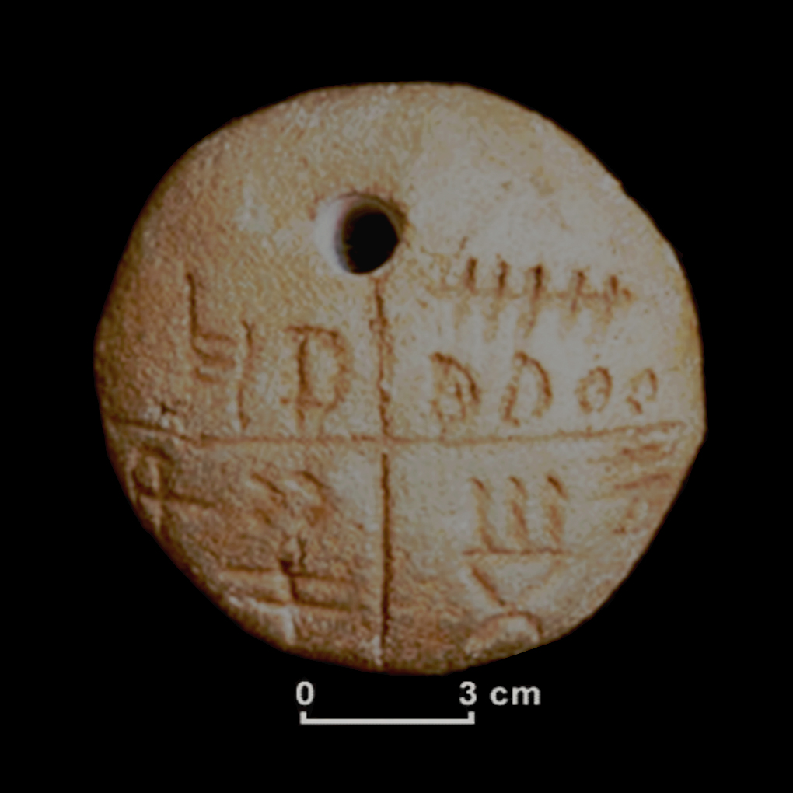
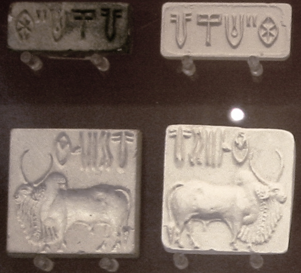
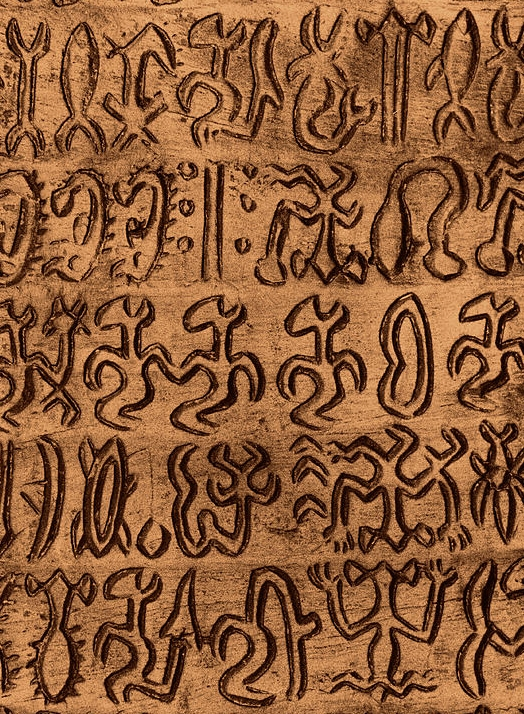

A Tărtăria clay tablet\

Indus script seals\

Rongorongo script from Easter Island\
What's included here?
This section includes writing systems and other related topics that don't belong with the other categories. This section is where you can learn about forms of proto-writing, undeciphered scripts, and other interesting things.